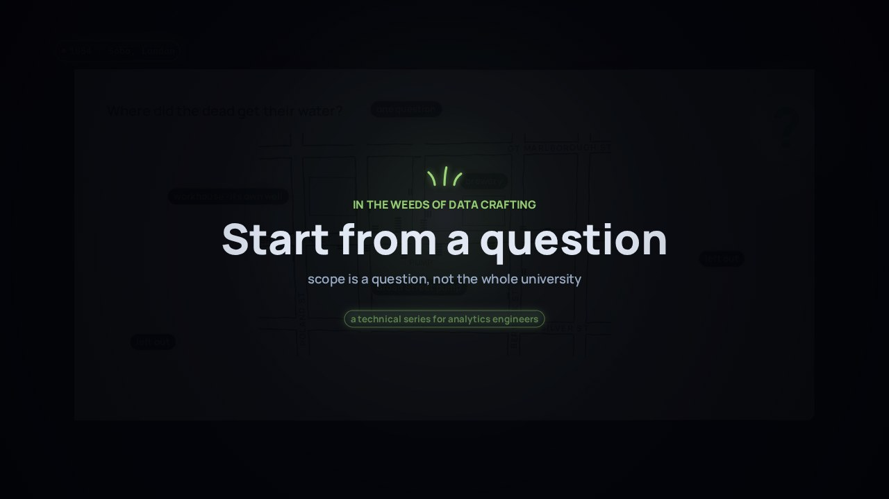

← Anterior · Película 2 de 9
Empieza por una pregunta
Un modelo no tiene borde hasta que una pregunta se lo da. Modela solo lo que la pregunta toca, y nombra primero al responsable de cada significado.
Temas › En las entrañas del oficio de datos
Aisha llega con tres claves, y otra Aisha se le parece mucho. Perfila las fuentes con una consulta detrás de cada afirmación, califica cada clave, une por reglas de la más confiable a la menos, deja que una persona decida lo que las reglas no pueden, y aplica el mismo hash a cada clave en todas partes.
La película está en inglés, con subtítulos en español. Esta página, los capítulos, las preguntas, los labs y las situaciones están en español.
Amplía Empieza por una pregunta
Presiona Reproducir, o salta a un capítulo. Activa Pausa para pensar y la película se detiene con una pregunta al final de los capítulos.

Descargar el video (en inglés)Archivos de subtítulosLeer el guion (en inglés)
¿Y ahora?
Cada tarjeta de la película muestra un archivo real del proyecto de dbt de ejemplo. Abre en GitHub los que muestra cada capítulo, o ejecuta tú el proyecto entero.
analyses/profiling/profile_null_keys.sql analyses/profiling/profile_shared_emails.sql analyses/profiling/profile_orphans.sqlseeds/reference/shared/key_sets.csv macros/shared/keys.sql models/staging/short_courses/stg_short_courses__learners.sqlmodels/intermediate/student/int_learner_key_candidates.sql models/intermediate/student/int_learner_keys_matched.sql models/core/student/_student__conceptual.ymlseeds/reference/student/learner_identity_decisions.csv models/intermediate/student/int_learner_key_candidates.sql tests/rules/keys_decided_different_stay_apart.sqlmacros/shared/keys.sqlseeds/reference/student/status_map.csv seeds/reference/student/_student__seeds.ymlLas cuatro preguntas de Pausa para pensar, para una clase o un equipo. Abre una para ver la respuesta.
Película 3 de 9.

← Anterior · Película 2 de 9
Un modelo no tiene borde hasta que una pregunta se lo da. Modela solo lo que la pregunta toca, y nombra primero al responsable de cada significado.

Siguiente · Película 4 de 9 →
Doce el día del censo, nueve hoy: las dos correctas. Di qué es una fila y qué día describe, antes de escribir SQL, y prueba las dos cosas.